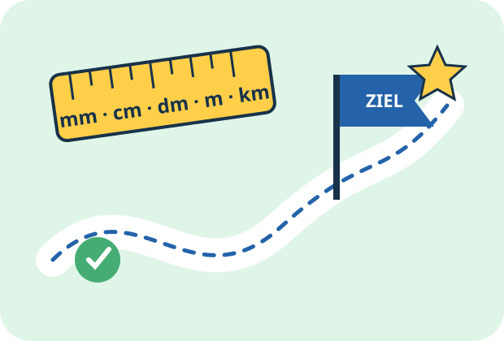

Mathe Klasse 3
Was möchtest du heute lernen?
Wähle ein Thema. Der Lernbegleiter erklärt zuerst die wichtigsten Regeln und begleitet dich danach durch interaktive Aufgaben.

Deine Themen
🚀 Heute ein kleiner Lernschritt – morgen schon ein großer Erfolg!